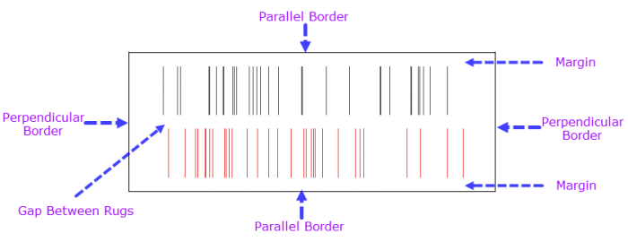
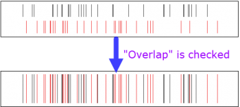

Seit Origin 2017 können Sie die Layerliste verwenden, um zwischen Layern in einem Diagramm mit mehreren Layern zu wechseln.

Um die Darstellung der Rugs für ein 2D-XY-Diagramm im kartesischen Koordinatensystem zu zeigen, können Sie doppelt auf die XY-Achse klicken, um den Dialog Achsen zu öffnen. Gehen Sie dann zur Registerkarte Rug, wie unten zu sehen, um die Anpassungen vorzunehmen.
|
Seit Origin 2017 können Sie die Layerliste verwenden, um zwischen Layern in einem Diagramm mit mehreren Layern zu wechseln.
|
Dieses Bedienelement kann verwendet werden, um das Rugfeld für die aktuell ausgewählte Achse zu zeigen oder zu verbergen.
Aktivieren Sie dieses Kontrollkästchen, um die gleichen Rugoptionen für die obere und untere (linke und rechte) Achse zu verwenden. Wenn das Kontrollkästchen aktiviert ist, werden die Optionen Unten und Oben (Links und Rechts) geteilt. Sie müssen nur die untere und linke Achse benutzerdefiniert anpassen, und die Einstellungen werden auf die obere und rechte angewendet.
Wählen Sie eine Zeichnung aus, um ihre Rugs in der aktuellen Richtung zu zeigen. Standardmäßig ist <Alle> ausgewählt, um die Rugs für alle Zeichnungen in der aktuellen Richtung zu zeigen. Wenn Sie eine einzelne Zeichnung festlegen, können Sie auf die Pfeilschaltfläche neben dem Textfeld klicken, um die Zeichnung im Kontextmenü auszuwählen.
Legen Sie die Farbe der Ruglinien fest. Standardmäßig ist sie auf Auto gesetzt. Das bedeutet, dass die Farbe der Rugs der Farbe der Zeichnung entspricht.
Legen Sie die Dicke der Ruglinien fest.
Legen Sie die Transparenz der Ruglinien fest. Der Wert wird in Prozent angegeben und liegt zwischen 0 ~ 100.
Passen Sie das Aussehen des Rugfelds an.

Legen Sie die Höhe des Rugfelds fest.
Sie können einen Wert wie 50 festlegen. Die Höhe des Rugfelds ist dann gleich [(Layerbreite + Layerhöhe)/2]*50%.
Um die Layerbreite und -höhe zu überprüfen, können Sie die Registerkarte Größe im Dialog Details Zeichnung öffnen.
Wenn es mehr als einen Datensatz in der aktuellen Richtung gibt, aktivieren Sie das Kontrollkästchen, um zuzulassen, dass die Ruglinien der verschiedenen Datensätze sich überschneiden.

Dieses Kontrollkästchen ist für alle Standardvorlagen mit Rugs wie Punkt + Rug standardmäßig aktiviert, damit sich die Ruglinien der verschiedenen Datensätze überschneiden (alle Ruglinien werden ausgerichtet).
Wenn dieses Kontrollkästchen deaktiviert ist, werden die Ruglinien der verschiedenen Datensätze in der Richtung getrennt, die senkrecht zur Achse liegt.
Die Option ist nur verfügbar, wenn das Kontrollkästchen Überschneidung oben deaktiviert ist.
Wenn das Kontrollkästchen Überschneidung deaktiviert ist, werden die Ruglinien der verschiedenen Datensätze in der Richtung getrennt, die senkrecht zur Achse liegt. Sie können dann einen Prozentwert eingeben (sollte < 100 sein. z. B. 20), um den Abstand für die verschiedenen Rug-Diagramme festzulegen.
Setzen Sie die Höhe oder Breite des Rugfelds auf Größe, dann:
Abstand = (Größe - Größe * Rand(%) *2) * Abstand zwischen Rugs(%)
Diese Option wird verwendet, um den unteren und oberen Rand des Rugfelds zu steuern, basierend auf der Option Größe (%).
Bitte beachten Sie, dass diese Zahl nicht kleiner als 50 sein sollte. Auch wenn Sie sie auf 50 oder einen größeren Wert festlegen können, behandelt Origin den Wert trotzdem als 0.
Legen Sie fest, ob die senkrechte Grenze gezeigt werden soll.
Legen Sie fest, ob die parallele Grenze gezeigt werden soll.